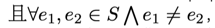

为了拯救重要之人，御原玖音和Rinne Ohara都努力地进行时间机器的研究，为此她们正在学习一些必要的算法。在学习的过程中，她们发现了一个叫做开花（Blossom algorithm，也被称作带花树）的有趣算法。
开花算法可以用来解决一般图最大匹配问题，经过一些修改还可以用来解决一般图最大权匹配问题。原始的开花算法的时间复杂度为$O(|V|^2|E|)$，其中$|V|,|E|$分别为图的点数与边数。有很多人对开花算法进行了优化，如Gabow在《 Data structures for weighted matching and nearest common ancestors with linking》一文中将一般图最大权匹配的时间复杂度优化到了$O(|V|(|E|+|V| \log |V|))$。
本着不重复造轮子的心态，Rinne尝试在线搜索开花算法的代码，但是找到的却都是时间复杂度为$O(V^3)$的实现方式。玖音只好自己写出一份代码，对一道例题跑出结果，然后请你检验她的答案对不对。
玖音的题目是这样的：
给出一张点集为$V$，边集为$E$的无向图$G$，点的编号为$0$至$|V|-1$，边$(u,v)$的权值为$\min(u,v)$。一个边集$S$是图的一个匹配当且仅当$S \subseteq E$，且$\forall e_1,e_2 \in S \bigwedge e_1 \neq e_2$，满足$e_1,e_2$无公共端点。对于一个边集$S$，定义$W_S$为$S$中所有边的权值的集合。对于一个自然数集$W$，定义$Mex(W)$为最小的不属于$W$的自然数。求对于图$G$的匹配$S$，$Mex(W_S)$的最大值是多少。
好心的Rinne为了减少你的负担，将题目的做法告诉了你，你只需要实现一个高效的开花算法即可。当然，如果你已经会做这道题了，就可以不用继续看下去了。Rinne给出的做法是这样的：
对于所有的边$e \in E$，若其原本的边权为$w$，将其改为$2^{|V|-w}$。求出新图的最大权匹配后，设其权值之和为$X$，将其二进制表示中的最低$|V|+1$位由高位到低位依次写出来，第一个为$0$的位的出现位置（从$0$开始编号）就是答案。要想证明正确性又要花费一些时间，不过Rinne是不会骗你的。
Note：公式渲染修正：
 Comet OJ
Comet OJ